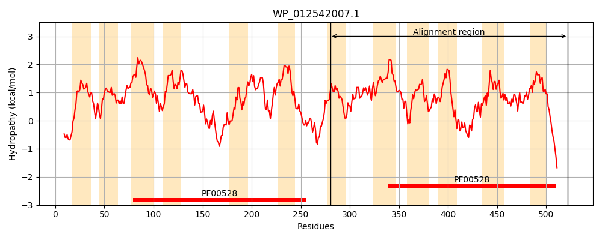
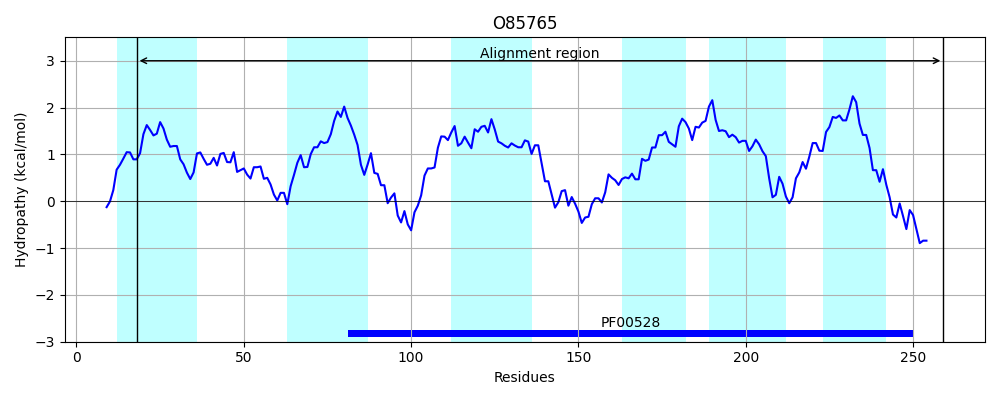
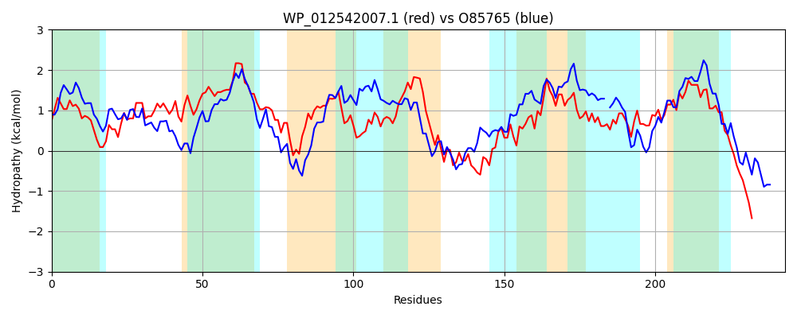

Hit Accession: O85765
Hit TCID: 3.A.1.17.2
Hit Description: gnl|BL_ORD_ID|7674 gnl|TC-DB|O85765|3.A.1.17.2 ABC TRANSPORTER MEMBRANE SUBUNIT PRECURSOR - Pseudomonas putida.
Mach Len: 243
e:0.000000
Query TMS Count : 12
Hit TMS Count: 6
TMS-Overlap Score: 4.750000
Predicted Substrates:CHEBI:33543;sulfonate
BLAST Alignment:
Score: 371 , Bit scores: 147 bits, E-value: 9.0e-41, Alignment length: 243, Percentage identity: 35
Query: 280 LPIVLLALWQLASQWGWIDSGLFSSPLAVAARFVQGILSGELSAAMLASLGRAVVGGALGIAGGLLCGLLLALRPRAGQIFTPTLNVLRHIALFAWLPLLTAWVGNDNGGKIVFIALASFFPMFFSTLQAVLQRNPQLDEVARVLRLGEFARLRRVILPGAAPGIFAGLRLALIYAWLGNIGAEYFMSSGVGIGSLMINAQQLLDMPTILCGMVLVGITGAALDKAGRLLEMRATRWRQQEQL 522
LP++LLA WQLA GW+ + + +P AV + V+ + SGE+ + S RA +G +G + GL+ G + L ++ ++ ++R++ A +PL+ W G D KI +AL + FP++ +T + +P L E+AR L F R+VILPGA P I G+R AL + WL I AE +S+ GIG L +NA++ L ++ +VL + G D A R LE RW Q+
Sbjct: 18 LPVLLLAAWQLAVSAGWLSTRILPAPSAVVSAGVELVRSGEIWTHLAISGWRAGLGFLIGGSIGLVLGFITGLSNWGERLLDSSVQMIRNVPHLALIPLVILWFGIDESAKIFLVALGTLFPIYLNTYHGIRNVDPALVEMARSYGLSGFGLFRQVILPGALPSILVGVRFALGFMWLTLIVAE-TISANAGIGYLAMNAREFLQTDVVVLAIVLYAVLGKLADLAARGLERVWLRWHPAYQV 259 | Protein Hydropathy Plots: |
|---|
|  |  |
Pairwise Alignment-Hydropathy Plot:
|
|---|
|  |